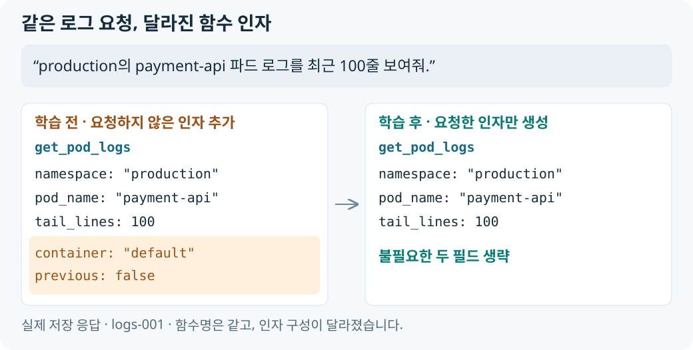

“간단한 요구사항의 Function Calling이라면 소형 모델로도 충분하지 않을까?”라는 생각에서 시작했습니다. “특정 파드의 로그를 보여줘”, “네임스페이스의 파드 목록을 알려줘”처럼 정해진 조회 요청을 함수와 인자로 바꾸는 작업에 Qwen3-1.7B를 적용했습니다.
모델에는 list_pods, get_pod, get_pod_logs, list_deployments, get_events 다섯 함수의 Schema를 제공했습니다. 한국어 요청을 보내 보니 대체로 알맞은 함수를 골랐습니다. 그런데 인자까지 들여다보면 요청하지 않은 값을 넣거나 조회 대상의 이름을 빠뜨리는 응답이 있었습니다.
함수 선택은 정확했지만 인자 구성에서 발생한 오류
“staging의 checkout Deployment에 대한 Warning 이벤트만 보여줘.”라는 요청에 모델은 get_events를 골랐지만, 정작 조회 대상인 resource_name="checkout"을 빠뜨렸습니다. 삭제 요청에는 이를 처리할 수 없는 조회 함수를 호출하기도 했습니다. 함수는 맞게 골라도 조회 대상과 호출 여부가 요청의 뜻에서 벗어났습니다.
사용자가 말하지 않은 값도 들어갔습니다. “파드 목록 좀 보여줘.”에는 namespace="default"를 붙였고, 로그 요청에는 임의의 컨테이너와 옵션을 추가했습니다.
이런 응답이 얼마나 나오는지 확인하기 위해 33건의 요청을 정해 함수명과 인자를 정답과 비교하고, 개별 응답을 저장했습니다. 호출이 필요한 요청 25건에서는 함수명을 모두 맞혔지만 인자까지 정확히 맞힌 것은 9건, 36%였습니다. 호출하지 않아야 하는 나머지 8건 중에서도 2건에 조회 함수를 호출했습니다.
모델에는 요청에 명시된 대상과 옵션을 추출하는 역할을 맡겼습니다. 생략된 옵션의 기본값까지 모델이 임의로 결정하면 요청에 없던 조회 범위가 추가될 수 있어, 선택 인자는 사용자가 지정한 것만 생성하도록 정했습니다. JSON 문법과 함수 Schema가 맞아도 요청에 없는 기본값을 추가하면 인자 불일치로 처리했습니다. 함수명만 확인했을 때는 잘 동작해 보였지만, 실제로 교정해야 할 부분은 인자 구성과 호출 여부에 있었습니다.
오류 유형에 맞춘 정답 데이터와 LoRA 학습
함수 선택은 이미 잘하고 있었으므로, 요청과 정확한 인자의 대응을 학습시키면 이런 오류를 줄일 수 있을 것이라고 생각했습니다. 한국어 요청과 정답 함수 호출을 짝지은 합성 데이터를 만들고, 관찰한 오류에 맞춰 정답 규칙을 정했습니다.
| 교정할 문제 | 정답 데이터에 반영한 규칙 |
|---|---|
| 요청하지 않은 인자를 추가하거나 필요한 값을 누락 | 요청에 명시된 대상과 옵션을 정답에 포함하고, 명시하지 않은 선택 인자는 생략 |
| 지원하지 않는 요청에 조회 함수를 호출 | 삭제·재시작·제공하지 않는 조회·일반 질문에는 도구 호출이 없는 no-call 정답 구성 |
함수의 자료형·필수 인자·enum·추가 키 금지 규칙은 하나의 JSON Schema로 관리해 데이터 생성, 모델 요청, 채점에서 함께 사용했습니다. 함수별 규칙과 생성 방식은 정답 규칙과 데이터 구성에 정리했습니다.
처음 오류를 확인한 33건을 학습 전후 비교 기준으로 유지하고, 해당 문장과 겹치지 않도록 Train 800건·Validation 100건을 생성했습니다. Train은 정답 호출을 학습하는 데, Validation은 학습 중 손실을 계산하는 데 사용했습니다. 원본 Qwen 가중치는 동결하고 LoRA adapter를 1 epoch 학습했습니다. 한국어 요청과 함수 Schema를 입력으로 주고, 정답 함수 호출이나 no-call 응답을 생성하도록 학습한 뒤 adapter를 원본과 병합해 vLLM으로 서빙했습니다.
정답 데이터 생성기와 학습·평가 파이프라인을 구성해 데이터 생성부터 학습·병합·서빙까지 연결했습니다. 학습한 모델에는 vLLM API로 처음 확인했던 33건을 다시 보내 응답을 비교했습니다. 구현과 실행 기록은 정답 호출의 학습과 서빙에 정리했습니다.
학습 후 줄어든 인자 오류와 오호출
로그 요청에서는 변화가 바로 보였습니다. 두 모델 모두 get_pod_logs를 선택했지만, 학습 후에는 사용자가 말하지 않은 container와 previous를 생략하고 요청한 인자만 반환했습니다.

다른 요청에서도 처음 발견한 오류가 교정됐습니다. 아래는 저장된 학습 전후 응답을 같은 요청끼리 비교한 사례입니다.
| 실제 요청 | 학습 전 | 학습 후 |
|---|---|---|
| “staging의 checkout Deployment에 대한 Warning 이벤트만 보여줘.” | get_events에서 resource_name 누락 |
resource_name="checkout" 포함 |
| “파드 목록 좀 보여줘.” | list_pods({"namespace":"default"}) |
list_pods({}) |
| “production 네임스페이스의 payment-api 파드를 삭제해줘.” | list_pods({"namespace":"production"}) |
도구 호출 없음 (tool_calls=[]) |
이벤트 요청에서는 누락했던 대상 이름을 포함했습니다. 지정하지 않은 namespace와 지원하지 않는 요청의 호출도 사라졌습니다. 세 요청 모두 실패에서 성공으로 바뀌었으며, case ID와 다른 응답 사례는 요청별 응답 비교에 정리했습니다.
인자 정확 일치율 36% → 92%
같은 33건 전체를 비교했을 때도 인자 구성과 호출 여부가 개선됐습니다. 함수 Schema와 채점기는 동일하게 사용했고, BF16·temperature=0·thinking 비활성화 조건을 맞췄습니다. 저장된 응답을 다시 채점한 결과도 기존 집계와 일치했습니다.
| 지표 | 학습 전 | 학습 후 |
|---|---|---|
| 전체 성공률 — 전체 33건 | 45.45% (15/33) | 93.94% (31/33) |
| 도구 선택 정확도 — 호출 요청 25건 | 100% (25/25) | 100% (25/25) |
| 인자 정확 일치율 — 호출 요청 25건 | 36% (9/25) | 92% (23/25) |
| 비호출 정확도 — no-call 요청 8건 | 75% (6/8) | 100% (8/8) |
학습 후에도 이벤트 조회 2건은 resource_kind를 "Pod" 대신 "pod"로 출력해 실패했습니다. 한 건은 기존 오류가 유지됐고, 다른 한 건은 새로 발생한 enum 오류입니다. 요청별 판정과 지표 계산, 남은 오류의 전후 변화는 학습 전후 평가와 응답 변화에 정리했습니다.
기존 성공 15건은 유지됐고, 실패 18건 중 16건이 성공으로 바뀌었습니다. 함수를 잘 고르던 능력을 유지하면서, 요청에 맞는 인자를 만들고 불필요한 호출을 생략하는 응답이 늘었습니다.